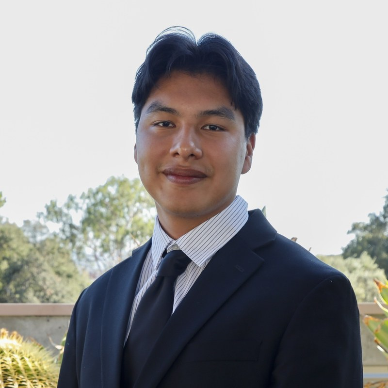
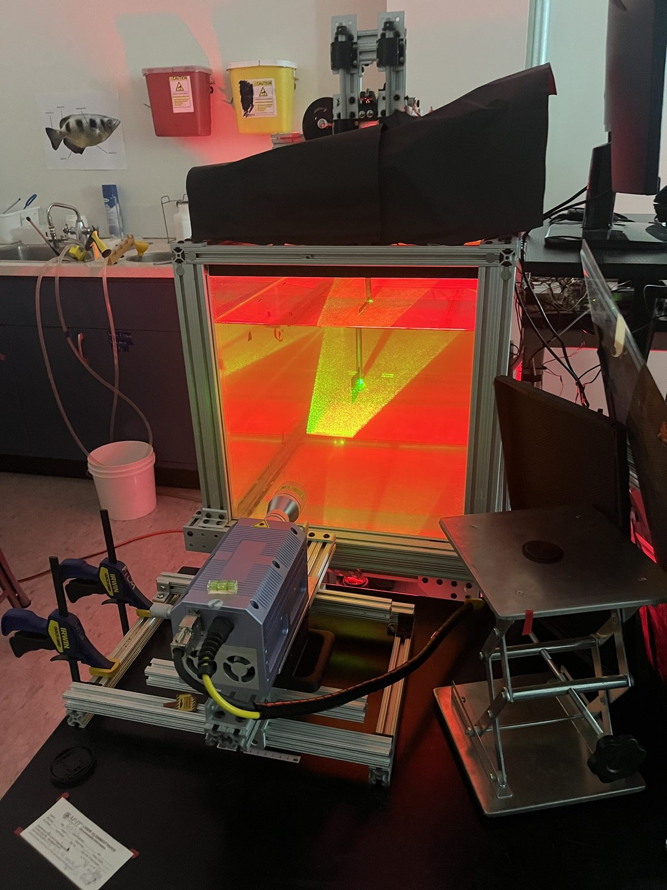
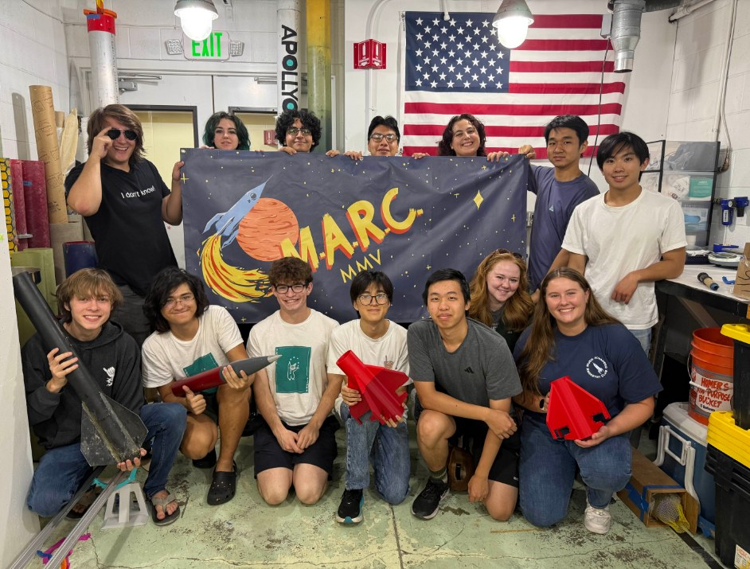
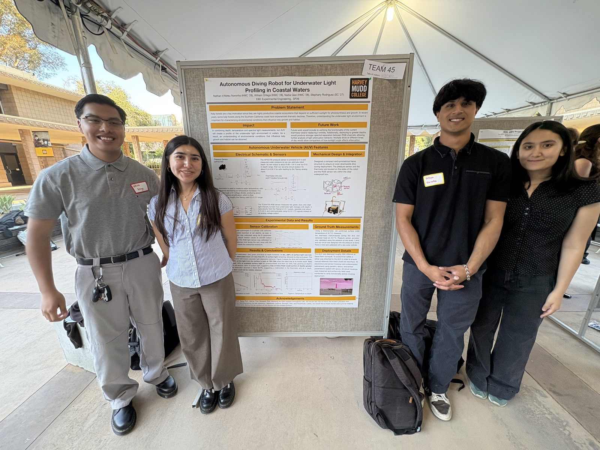
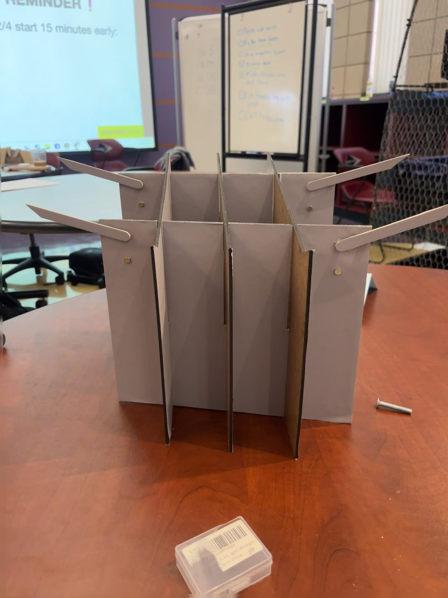
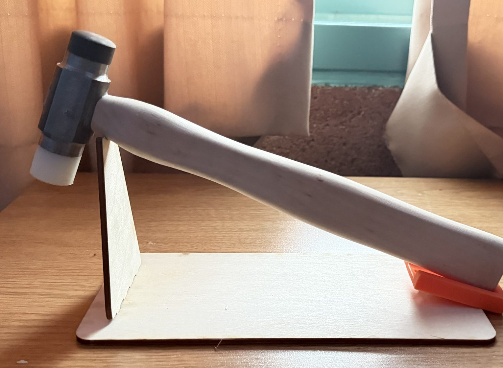
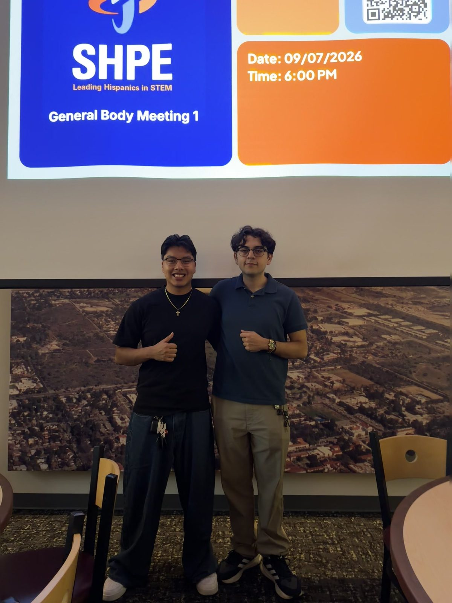

William Ortega
I design, build, and test hardware for propulsion, fluid dynamics, and aerospace systems, from flapping-fin thrust experiments to rocket canards.
Currently
Undergraduate researcher in the Flow Imaging Lab, studying bio-inspired flapping-fin propulsion.
Propulsion subteam, Mudd Amateur Rocketry Club: canard sizing in OpenRocket and Ansys CFD.
Co-Founder & Co-President of Harvey Mudd's SHPE chapter.
Summer 2027 internships in propulsion, fluids, test, and mechanical engineering.
Featured Work

Flapping-Fin Propulsion
Built an 80/20 test fixture and ran 100+ trials, reaching a peak trial-averaged thrust coefficient of about 4.9.

Competition Rocket Canards
Sized canards to keep stability above 1.2 calibers and set up Ansys CFD for the flight controller.

Autonomous Underwater Vehicle
Custom sensor board and depth control; measured >80% light loss by 3 m off Dana Point.

Mobile Lectern
A $24 collapsible lectern for a professor client that sets up in 1.6 s and holds over 12 lb.

Machinist's Hammer
Machined from raw steel and nylon to ±0.001 in. on manual mills and lathes.

SHPE Harvey Mudd
Co-founded the chapter, grew it to 52 students, and secured $10K for the 2026 National Convention.